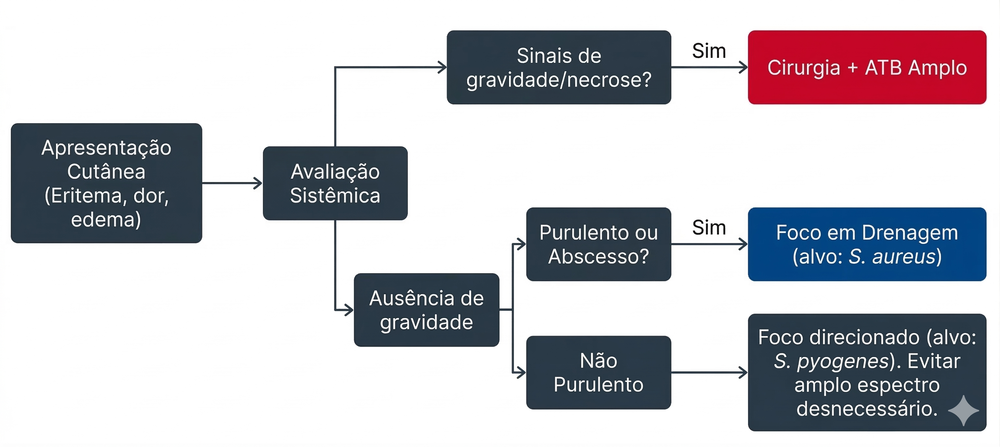

Infecções de pele e partes moles
As infecções de pele e partes moles abrangem um espectro clínico amplo, que inclui desde celulites superficiais até infecções necrosantes de rápida progressão. O reconhecimento adequado dessas infecções exige distinguir processos infecciosos verdadeiros de condições inflamatórias que podem simular infecção bacteriana.
Nas infecções comunitárias não complicadas, os agentes mais frequentemente envolvidos são Streptococcus pyogenes e Staphylococcus aureus. A presença de secreção purulenta ou abscesso aumenta a probabilidade de participação estafilocócica. Fatores como trauma cutâneo, úlceras crônicas, diabetes mellitus ou hospitalização recente podem modificar o perfil etiológico esperado 4.

O diagnóstico dessas infecções é predominantemente clínico, baseado na avaliação da apresentação cutânea e da evolução do quadro. Eritema, calor local, dor e edema devem ser interpretados em conjunto com a evolução temporal do quadro e com a presença ou ausência de sinais sistêmicos.
Nem toda área eritematosa representa infecção bacteriana. Dermatites inflamatórias, reações alérgicas, fenômenos vasculares ou processos inflamatórios não infecciosos podem apresentar manifestações clínicas semelhantes.
A escolha inicial do espectro antimicrobiano deve ser proporcional à apresentação clínica. Em celulites não purulentas, a cobertura direcionada a estreptococos costuma ser suficiente. A inclusão rotineira de cobertura para bacilos Gram-negativos ou bactérias anaeróbias em infecções superficiais não complicadas geralmente não possui justificativa fisiopatológica 4.
Nos quadros purulentos, a drenagem adequada do abscesso constitui elemento central do tratamento. Em determinadas situações, especialmente quando não há sinais sistêmicos de infecção, a intervenção local pode ser suficiente, sem necessidade de antibioticoterapia sistêmica 4.
Em apresentações graves, com rápida progressão, necrose tecidual ou instabilidade hemodinâmica, a probabilidade de infecção invasiva ou polimicrobiana aumenta, exigindo abordagem terapêutica mais abrangente e, frequentemente, intervenção cirúrgica imediata.
Além das características da infecção, fatores relacionados ao hospedeiro também influenciam a escolha do tratamento inicial. Idade avançada, imunossupressão, hospitalização recente, uso prévio de antibacterianos e presença de dispositivos invasivos podem modificar a probabilidade etiológica e o risco de resistência bacteriana.
Assim, a antibioticoterapia nas infecções de pele e partes moles deve resultar da integração entre apresentação clínica, necessidade de intervenção local e fatores individuais do paciente.